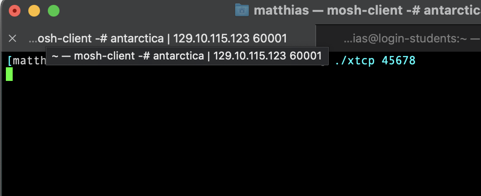
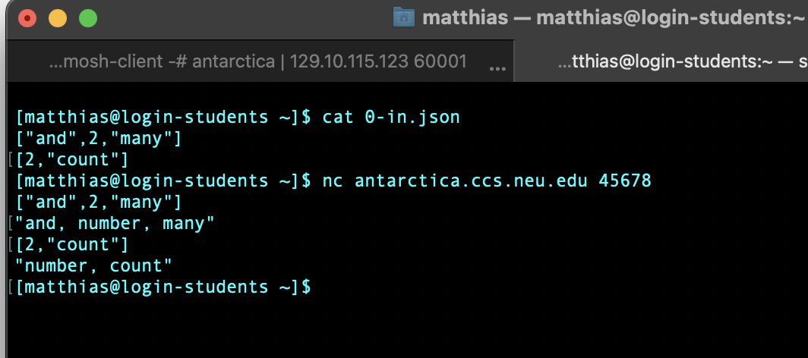

C —
Due Sunday, 01 October 2023, 11:59pm
Motivation Your software architect has inform you of the overall
idea—
Purpose to explore the TCP libraries of the chosen programming language
also, to reflect on the language of your choice
Delivery You must deliver xtcp and Tests/ in a directory called C in your repository.
All auxiliary files must be put into a sub-directory called C/Other/.
Task Develop xtcp, a TCP server program. It permits a single client to connect. It then processes a series of JSON values on this TCP connection. The series can be arbitrarily long and there can be arbitrary delays between the arrival of the separate JSON values.
When a JSON value arrives on the input side, xtcp turns it into a
string—
The program takes one command-line argument, an integer between 10000 and 60000 (inclusive). This argument specifies the port on which xtcp accepts connections. (There is no need to validate this number.)
Reuse Since the program’s functionality is the same as that of xjson
from A —
Tests Create three tests for xtcp in the directory Tests/. You
may re-use the validated test from your solution for A —
Constraint No test file may exceed the size limit of 40Kb.
Remote Connection
[login-students] $ nc antarctia.ccs.neu.edu 45678 |


The nc command sends JSON arrays from login-students to antarctica.ccs.neu.edu, one at a time. To create the screen shot I copied and pasted the lines from above and pressed return. The server responds with the expected string. The inputs sent to the server and the outputs are interleaved, as specified above.
You can also run these commands on the same machine, using two terminals, which will mimic the workings of our test harness. Since many of your friends may try this at the same time on login-students, pick a random port number between 10000 and 60000 so you don’t interfere with each other. If all of you use the same port on the same computer, bad things will happen.
Netcat vs netcap
There exists a whole family of netcat programs.
The one on the Linux servers is nmap netcat and it satisifies all of our needs.
Macs may vary; mine had the nmap netcat preinstalled via the developer toolkit.
On Windows it is likely not pre-installed. Windows users may wish to visit the nmap site, download the ncat executable, and add it to their paths.
If your machine has the OpenBSD version installed, you may need to use the -N command-line option.
Language Switch
Now that you have completed all exploratory programming tasks, you should reflect on your experience with your language and its tools. Here are some sample questions you may ponder, especially with respect to the (rather short and compact) solution that the instructors showed you in class. (1) What problems did you encounter with [the libraries of] your chosen language? (2) How easy was it to write unit tests? Run them? Check expression coverage? (3) Did the chosen IDE support the programming well? (4) In which way will the desired language fix the above problems? (5) How much time did it take to accomplish the exploratory tasks given how short the programs should be.
Once you have answered these questions for yourself, honestly ask yourself whether you still think the language is a good choice for a project that involves the explored aspects (and more).
If you wish to switch languages, write down a rationale: why you no longer like your TAHBPL (the above questions may be a guide); how you expect your alternative TAHBPL to remedy the diagnosed problems. Half a page per negative response suffices. Less is more. Address the memo to your section instructor, send it to him, and make an in-person appointment. CC the tech TA.